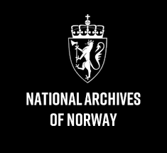

This overview is based on this XML output of the GLAMorous tool d.d. 01-03-2024.
It was generated using the GLAMorousToHTML code.
Also see the documentation of this tool.
This data is also available as an Excel file. More structured data formats (csv, json) will be added in the future.
Available languages
Nynorsk (342)
English (130)
Nynorsk (73)
German (64)
Korean (58)
French (44)
Swedish (43)
Chinese (28)
Danish (28)
Italian (27)
Russian (26)
Egyptian Arabic (25)
Finnish (24)
Polish (24)
Dutch (18)
Spanish (18)
Portuguese (15)
Arabic (14)
Japanese (14)
Persian (13)
Czech (12)
Turkish (12)
Ukrainian (12)
Hebrew (7)
Catalan (6)
Slovene (6)
Belarusian (5)
Eastern Armenian (5)
Hungarian (5)
Serbian (5)
Greek (4)
Thai (4)
Basque (3)
Romanian (3)
South Azerbaijani (3)
Standard Estonian (3)
Bosnian (2)
Bulgarian (2)
Cebuano (2)
Galician (2)
Icelandic (2)
Indonesian (2)
Irish (2)
Latvian (2)
Lithuanian (2)
Macedonian (2)
Scottish Gaelic (2)
Slovak (2)
Vietnamese (2)
Welsh (2)
Breton (1)
Burmese (1)
Buryat (1)
Classical Chinese (1)
Croatian (1)
Esperanto (1)
Georgian (1)
Ido (1)
Interlingua (1)
Kazakh (1)
Khmer (1)
Ladin (1)
Latin (1)
Luxembourgish (1)
Marathi (1)
Northern Sami (1)
Papiamento (1)
Punjabi (1)
Tatar (1)
Urdu (1)
Uzbek (1)
Venetian (1)
Volapük (1)
Nynorsk (342)
20._juli-attentatet |
Adieu_(sang) |
Agnar_Mykle |
Alexandra_Voronin |
Alt_for_Norge |
Alta-konflikten |
Andenes |
Angrepet_på_Norge_i_1940 |
Anne_Lise_Gjøstøl |
Arkiv |
Asylsøker |
Aula-brannen |
Axel_Stang |
Bad_Elements |
Baglerne |
Banana_Airlines |
Bekkelagsraset |
Beksømstøvler |
Bill_Koch |
Bjørn_Wirkola |
Bjørnevatn |
Bombingen_av_Kristiansund |
Brev_fra_kong_Filippus_Simonsson_ca._1207–1217 |
Brønnøysund_fyr |
Carl_Buch |
Carl_Haakon_Langlie |
Casino_(Holmestrand) |
Christian_Frederik |
DS_«Bastø»_(1934) |
DS_«Konsul_Olsen» |
DS_«Lynx» |
DS_«Pelle» |
Dag_Spantell |
Dagfinn_Mannsåker |
Den_norsk-svenske_grense |
Den_norske_legion |
Den_svensk-norske_krigen_(1814) |
Det_norske_landssvikoppgjøret |
Det_skulle_ha_vært_sommer_nå |
Dizzie_Tunes |
Dommer |
Dødsfall_i_2004 |
Dødsfall_i_2007 |
Dødsfall_i_2012 |
Dødsfall_i_2023 |
Eduard_Dietl |
Egebergs_Ærespris |
Einar_Idland |
Einsatzgruppe_Norwegen |
Eivind_Blehr |
Eivind_Enger |
Ekebergbanen |
Ekstraskatten_av_1762 |
Ekstraskattene_av_21._februar_1711 |
Ellen_Nikolaysen |
Elvemusling |
Enevelde |
Eplenikkers |
Espen_Beranek_Holm |
Eurovision_Song_Contest_1974 |
Eurovision_Song_Contest_1975 |
Eurovision_Song_Contest_1978 |
Eurovision_Song_Contest_1980 |
Eurovision_Song_Contest_1982 |
Eurovision_Song_Contest_1983 |
Eurovision_Song_Contest_1985 |
Eurovision_Song_Contest_1986 |
Festiviteten_i_Sarpsborg |
Filippus_Simonsson |
Fimbulvinter |
Flaggresolusjonen |
Flyktninger_fra_Norge |
Flyktningeruta |
Folkeaksjonen_mot_utbygging_av_Alta-Kautokeinovassdraget |
Folkeavstemning_om_oppløsning_av_unionen_med_Sverige |
Folkeavstemningen_om_Norges_tilslutning_til_EF_1972 |
Folkebevegelsen_mot_norsk_medlemskap_i_EEC |
Folketellingen_1801 |
Formuesskatt |
Forræderi |
Frakk |
Francis_Bull |
Franz_Six |
Frederik_III_av_Danmark_og_Norge |
Frederik_Prytz |
Fredrik_Paasche |
Friedel_Brandt |
Frigjøringen_av_Øst-Finnmark |
Frigjøringsmonumentet_i_Kirkenes |
Frogner_kirke_(Oslo) |
Frontkjemper |
Frontsøster |
Fylkesfører |
Førergarden |
Gamvik |
Georg_Wilhelm_Müller |
Gerhard_Flesch |
Gjeter |
Grand_Hotel_(Oslo) |
Grenselos |
Grethe_Kausland |
Gro_Anita_Schønn |
Grønlands_torg_(Oslo) |
Gulbrand_Lunde |
Guttehirden |
Hans_Borgenstjerne_Andersen |
Hans_Lammers |
Hans_Normann_Dahl |
Harald_Grieg |
Harald_Renbjør |
Heinrich_Fehlis |
Hermann_Tittel |
Hirden |
Hjørdis_Lauenborg |
Holocaust_i_Norge |
Hoppuka |
Huleboerne_i_Finnmark |
Hver_gang_vi_møtes |
Hvervenbukta |
Hvor_er_du? |
Hydro_Transport |
Høy-_og_senmiddelalder_i_Norge |
Høyreekstremisme |
Idrettsstreiken |
Ingemar_Stjerndahl |
Inger_Lise_Rypdal |
Ingrid_Bjerkås |
Isfall |
Ivar_Næss |
Ja_til_EF |
Jacob_S._Worm-Müller |
Jahn_Teigen |
Jazz_i_Norge |
Jens_Hundseid |
Joakim_Sveder_Bang |
Johan_Andreas_Lippestad |
Johan_Bernhard_Hjort |
Johan_Nygaardsvolds_regjering |
Jon_Lauritz_Qvisling |
Jonas_Lie_(1899–1945) |
Josef_Terboven |
Jul |
Kalevi_Laurila |
Kapitulasjonsavtalen_1940 |
Karl_Johans_gate |
Karl_Marthinsen |
Kautokeino_flyplass |
Kings_Bay |
Kings_Bay-saken |
Kiosk |
Kirkebok |
Kirkenes |
Kjeld_Fredrik_Karl_Stub |
Kjeld_Stub_Irgens |
Kjell_Hallbing |
Kjersti_Døvigen |
Kjesäter |
Knut_Blom |
Konditor |
Kornbånd |
Krigsmesterskapet_på_ski |
Krigsseiler |
Krigsskolen |
Krokstrand |
Krone_(hodebekledning) |
Kullmann-saken |
Kurér_(radioapparat) |
Kvinnehirden |
La_det_swinge |
Lapphund |
Lasse_Kolstad |
Lebensborn |
Leif_Jensson |
Lensregnskap |
Lillian_Harriet |
Liste_over_Finnmarks_fylkesmenn |
Liste_over_Norges_fiskeriministre |
Litteraturåret_1934 |
Lorentz_Harboe_Ree |
Lorns_Skjemstad |
Lynni_Treekrem |
MS_«Fjordbris»_(1948) |
Maj_Britt_Andersen |
Margit_Johnsen |
Margrete_I |
Maria_Quisling |
Melodi_Grand_Prix |
Melodi_Grand_Prix_1974 |
Melodi_Grand_Prix_1980 |
Melodi_Grand_Prix_1985 |
Melodi_Grand_Prix_1986 |
Mens_Nordhavet_bruser |
Midtstubakken |
Mil_etter_mil |
Militære_grader_og_distinksjoner_i_Tyskland_1939-1945 |
Mistillitsvotum |
Molo |
Morgan_Kane |
Morgan_Kane_(figur) |
Murmanskfronten |
Musikkåret_1947 |
Musikkåret_1960 |
Musikkåret_2001 |
Musikkåret_2007 |
Myklesaken |
Mødrehjem |
NS-monumentet |
NS_Arbeidstjeneste |
NS_Kvinneorganisasjon |
NS_Ungdomsfylking |
Nanna_Broch |
Nasjonal_Samling |
Nasjonal_Samlings_Borgarting |
Nils_Trosner |
Nordisk_Folkereisning |
Nordlandet_barneskole |
Norge_i_Eurovision_Song_Contest |
Norge_under_Napoleonskrigene |
Norge_under_andre_verdenskrig |
Norges_Lærersamband |
Norges_Skiforbund |
Norges_dokumentarv |
Norges_flagg |
Norges_forsvarsminister |
Norges_geografi |
Norges_idrettsforbund |
Norges_kronregalier |
Norsk_Spisevognselskap |
Norsk_landbruk |
Norske_Kvinners_Sanitetsforening |
Nortraship |
Notodden_gamle_stasjon |
Nøstetangen_glassverk |
Ofotbanen |
Olaf_Fermann |
Olaf_Helset |
Oliver_Møystad |
Omstreifere |
Organisasjon_Todts_virksomhet_i_Norge |
Orvar_Sæther |
Oscarsborg_festning |
Oslo_lagdømme |
Ottar_Aasegg |
Paavo_Lukkariniemi |
Peder_Holt |
Per_Borten |
Perle |
Polio_i_Norge |
Prestøy_fyr |
Propagandakompani |
Quisling |
Ragnar_Skancke |
Ragnarock |
Ragnhild_Michelsen |
Rallar |
Reisen_til_Julestjernen |
Reservepolitiet |
Revy |
Riksforsamlingen |
Riksgrense |
Rolf_Just_Nilsen |
Rottefella |
Rudolf_Schiedermair |
Rus |
Rye |
Salo_Grenning |
Samisk_historie_i_etterkrigstiden |
Samisk_historie_i_moderne_tid |
Sangen_om_den_røde_rubin |
Seler |
Senkingen_av_«Blücher» |
Sensur |
Senterpartiet |
Severin_Løvenskiold |
Sex_Pistols |
Sing_Sala_Bim |
Sissel_Kyrkjebø |
Sjøbuss |
Skarddalseggje |
Ski-VM_1966 |
Skipresident |
Skolen_for_norsk_prydkunst |
Skoskatt |
Skotfoss_Bruk |
Slåttonn |
Snekke |
Solheimsbrakka |
Solkorset |
Sonja_Henie |
Sophies_Minde_Ortopedi |
Sophus_Kahrs |
Spissgatter |
Statsakten_på_Akershus |
Statspolitiet |
Stein_Ingebrigtsen |
Stilla |
Store_Rauddalseggje |
Stortingsvalget_1936 |
Stortingsvalget_1957 |
Studentlue |
Sulitjelma_gruber |
Svanviken_arbeidskoloni |
Svein-Helge_Høgberg |
Sverre_Kjelsberg |
Sverre_Riisnæs |
Sydvaranger |
Synnøve_Strigen |
Sámiid_ædnan |
TV-året_1972 |
TV-året_1980 |
Teateråret_1922 |
Teateråret_2007 |
Teateråret_2012 |
Televerket_(Norge) |
The_Pussycats |
The_Rolling_Stones |
Thorstein_Fretheim_(1886–1971) |
Tor_Erik_Gunstrøm |
Tormod_Hustad |
Trafalgar_Square |
Trebåt |
Trollstigvegen |
Trond_Graff |
Trygve_Lie |
Tvangsarbeid |
Tvangsevakueringen_og_nedbrenningen_av_Finnmark_og_Nord-Troms |
Tyrihans_(andre_betydninger) |
Tysklandsstudentene |
Universitetets_aula |
V-tegn |
Vadsø |
Vaktjournalen_fra_Oscarsborg_9._april_1940 |
Vidkun_Quisling |
Vidkun_Quislings_andre_regjering |
Vidkun_Quislings_radiotale_9._april_1940 |
Vidkunn |
Viken_(historisk_område) |
Werwolf |
Wilhelm_Redieß |
Yngvar_Numme |
Østkantutstillingen |
Øyvind_Klingberg
English (130)
1900_in_Norway |
1943_in_Norway |
1945_in_Norway |
1947_in_Norway |
1956_in_Norway |
24_cm_K_L/35 |
24_cm_Theodor_Bruno_Kanone_(E) |
427th_Aircraft_Sustainment_Group |
8.8_cm_SK_C/35_naval_gun |
Alta_controversy |
Anne_Lise_Gjøstøl |
Arne_Dagfin_Dahl |
Axis_leaders_of_World_War_II |
Battle_of_Drøbak_Sound |
Bill_Koch_(skier) |
Bjørn_Wirkola |
Bobbysocks! |
Border_guide |
British_merchant_seamen_of_World_War_II |
Carlo_Otte |
Dag_Spantell |
Dizzie_Tunes |
Dried_and_salted_cod |
Eivind_Blehr |
Ellen_Nikolaysen |
Elvesæter |
Environmental_injustice_in_Europe |
Eric_Easton |
FIS_Nordic_World_Ski_Championships_1966 |
Film_speed |
Flag_of_Norway |
Fredrik_Paasche |
Fyresdal |
Gerhard_Flesch |
German_U-boat_bases_in_occupied_Norway |
German_cruiser_Blücher |
German_occupation_of_Norway |
German_submarine_U-251 |
German_submarine_U-255 |
Graham_Roberts |
Grethe_Kausland |
Gro_Anita_Schønn |
Gulbrand_Lunde |
H7_(monogram) |
Haakon_VII |
Hirden |
History_of_Ny-Ålesund |
Hjørundfjord_Church |
Hvervenbukta |
Inger_Lise_Rypdal |
Jens_Schive |
Johan_Andreas_Lippestad |
Johan_Bernhard_Hjort |
Jordal_Amfi_(1951) |
Kabelvåg |
Kalevi_Laurila |
Kara_Sea_U-boat_campaign |
Karl_Kaufmann |
Kautokeino_Airfield |
Kingdom_of_Norway_(1814) |
Kings_Bay_(company) |
Kjeld_Stub_(1868–1955) |
Kjell_Hallbing |
Kjesäter |
Kristiansund_(town) |
LXX_Army_Corps_(Wehrmacht) |
Lasse_Kolstad |
Legal_purge_in_Norway_after_World_War_II |
Leonard_Statuette |
Liberation_of_Finnmark |
Lillebjørn_Nilsen |
Lisleherad_Station |
List_of_Knight's_Cross_of_the_Iron_Cross_recipients_(Ka–Km) |
List_of_Knight's_Cross_of_the_Iron_Cross_with_Oak_Leaves_recipients_(1944) |
List_of_Norwegians |
List_of_county_governors_of_Finnmark |
List_of_heads_of_government_of_Norway |
List_of_heads_of_government_who_were_later_imprisoned |
List_of_major_perpetrators_of_the_Holocaust |
Lorns_Skjemstad |
Lynni_Treekrem |
Maj_Britt_Andersen |
Margit_Johnsen |
Maria_Quisling |
Minister_of_Defence_(Norway) |
Minister_of_Fisheries_and_Ocean_Policy |
Ministry_of_Communications_(Japan) |
NME_Single_of_the_Year |
NSB_El_7 |
Nanna_Broch |
New_York_Dolls |
Norway |
Norway_in_the_Eurovision_Song_Contest |
Norway_in_the_Eurovision_Song_Contest_1974 |
Norwegian_Crown_Prince's_Coronet |
Norwegian_police_troops_in_Sweden_during_World_War_II |
Norwegian_resistance_movement |
Notodden_Old_Station |
Ny-Ålesund |
Olaf_Helset |
Oliver_Møystad |
Operation_Title |
Paavo_Lukkariniemi |
Peder_Holt |
Peter_Brandal |
Portuguese_in_Norway |
Ragnhild_Michelsen |
Regalia_of_Norway |
Reisen_til_Julestjernen |
Rolf_Just_Nilsen |
SS_Ryūsei_Maru |
Sex_Pistols |
Sissel_Kyrkjebø |
Skarddalseggi |
Sophus_Kahrs |
Stein_Ingebrigtsen |
Steve_Jones_(musician) |
Student_cap |
Sturmhauptführer |
Teodoro_de_Arana_y_Beláustegui |
The_Pussycats |
Thorstein_Fretheim |
Tormod_Kristoffer_Hustad |
Unterarzt_(military) |
V_sign |
Viceroy_of_Norway |
Vidkun_Quisling |
Wedding_of_Harald,_Crown_Prince_of_Norway,_and_Sonja_Haraldsen |
World_War_II_by_country |
Yngvar_Numme
Nynorsk (73)
16._november |
Alexandra_Voronin |
Altaelva |
Altasaka |
Anne_Lise_Gjøstøl |
Bill_Koch |
Bjørn_Wirkola |
Bragernes |
Brev_frå_kong_Filippus_Simonsson_ca._1207–1217 |
DS_«Lynx» |
Dagfinn_Mannsåker |
Den_norske_legion |
Dunderlandsdalen |
EU-striden |
Ellen_Nikolaysen |
Eurovision_Song_Contest_1974 |
Eurovision_Song_Contest_1975 |
Eurovision_Song_Contest_1982 |
Eurovision_Song_Contest_1985 |
Finse_stasjon |
Flyktningruta |
Folketeljinga_1801 |
Frakk |
Gerhard_Flesch |
Grethe_Kausland |
Hermann_Tittel |
Hirden |
Hvervenbukta |
Inger_Lise_Rypdal |
Ja_til_EF |
Johan_Andreas_Lippestad |
Johan_B._Hjort |
Kaffilag |
Kalevi_Laurila |
Kiosk |
Kjell_Hallbing |
Kornband |
Kristian_Fredrik_av_Noreg |
Krone_til_hovudet |
Lasse_Kolstad |
Lorns_Skjemstad |
Lynni_Treekrem |
Maj_Britt_Andersen |
Margit_Johnsen |
Maria_Quisling |
Melodi_Grand_Prix |
Melodi_Grand_Prix_1980 |
Melodi_Grand_Prix_1985 |
Melodi_Grand_Prix_1986 |
Nei |
Noreg_i_Eurovision_Song_Contest |
Noreg_under_andre_verdskrigen |
Noregs_dokumentarv |
Norrønt |
Norske_forsvarsministrar |
Nortraship |
Peder_Holt |
Polititroppene |
Ragnhild_Michelsen |
Rauddalseggi |
Rolf_Just_Nilsen |
Samisk_arkitektur |
Senterpartiet |
Severin_Løvenskiold |
Skarddalseggje |
Ski-VM_1966 |
Småkaker |
Snekke |
Sophus_Kahrs |
Studentlue |
Sámiid_ædnan |
Telegramadresse |
Vidkun_Quisling
German (64)
18._Juli |
24-cm-Kanone_Theodor-Bruno_(E) |
3._Gebirgs-Division_(Wehrmacht) |
Alta-Konflikt |
Anita_Skorgan |
Bali_(Schiff,_1928) |
Bill_Koch |
Bjørn_Wirkola |
Blücher_(Schiff,_1937) |
Carlo_Otte |
Christian_Philipp |
Couleur |
Ellen_Nikolaysen |
Emmerich_Nagy_(General) |
Espen_Beranek_Holm |
Finnmark_(Fylke) |
Flagge_Norwegens |
Friedrich_Franek |
Georg_Wilhelm_Müller_(SS-Mitglied) |
Gerhard_Flesch |
Graham_Roberts |
Grenze_zwischen_Norwegen_und_Schweden |
Inger_Lise_Rypdal |
Johannes_Flintoe |
Kalevi_Laurila |
Karl_Kaufmann_(Gauleiter) |
Kings_Bay |
Kommandant_der_Seeverteidigung_Kirkenes |
Kommandant_der_Seeverteidigung_Narvik |
Kongsfjord |
Krone_des_Kronprinzen_von_Norwegen |
Lasse_Kolstad |
Lillebjørn_Nilsen |
Liste_der_Biografien/Kah–Kak |
Liste_der_Biografien/Koc |
Liste_der_Biografien/Qui |
Liste_der_Fischereiminister_Norwegens |
Liste_der_Schweren_Kreuzer |
Liste_der_Tagessieger_der_Vierschanzentournee |
Liste_von_evangelischen_Pfarrerskindern_(P–Z) |
Lorns_Skjemstad |
Maj_Britt_Andersen |
Margit_Johnsen |
NSB_Type_32 |
Nasjonal_Samling |
Nei_til_EU |
Nordische_Skiweltmeisterschaften_1966 |
Norwegen_unter_deutscher_Besatzung |
Otto_Kähler_(Admiral) |
Paavo_Lukkariniemi |
Peder_Holt |
Rudolf_Schiedermair |
Steve_Jones_(Musiker) |
Studentenmütze |
The_Rolling_Stones |
Turi_Widerøe |
U_251 |
U_254 |
U_255 |
Vidkun_Quisling |
Volksabstimmung_in_Norwegen_1972 |
Westfalen_(Schiff,_1905) |
Wilhelm_Raithel |
Willi_Henne
Korean (58)
계급협조론 |
교권_파시즘 |
국가_파시스트당 |
국민군단국가 |
국민협동정부_(헝가리) |
그레테_카우슬란 |
기독교_파시즘 |
나라별_파시즘_운동_목록 |
나치_독일 |
나치즘 |
남의사 |
러시아_파시스트의_유언장 |
렉스당 |
로마_진군 |
반파시즘_운동 |
방공_협정 |
백의사 |
베니토_무솔리니 |
비드쿤_크비슬링 |
스파치오_비탈레 |
스페인_내전 |
슬로바키아_공화국_(1939년~1945년) |
신사회주의 |
신파시즘 |
아돌프_히틀러 |
아라키_사다오 |
안테_파벨리치 |
에코파시즘 |
오스트로파시즘 |
오스트리아_연방국 |
오즈월드_모즐리 |
왕징웨이 |
윌리엄_더들리_펠리 |
율리우스_에볼라 |
이탈리아_사회공화국 |
이탈리아_왕국 |
이탈리아_파시즘 |
이탈리아의_알바니아_침공 |
제2차_이탈리아-에티오피아_전쟁 |
제3의_위치 |
조반니_젠틸레 |
좌익_파시즘 |
추축국 |
코르넬리우_젤레아_코드레아누 |
콘스탄틴_로자옙스키 |
크로아티아_독립국 |
크비슬링_정권 |
타쿠아라_민족주의_운동 |
토야마_코이치 |
파시스트_(멸칭) |
파시즘 |
파시즘의_교리 |
팔랑헤주의 |
프랑코_정권 |
플리누_사우가두 |
핀마르크_해방 |
호세_안토니오_프리모_데_리베라 |
히르덴
French (44)
1966_en_combiné_nordique |
Affaire_de_Kings-Bay |
Bataille_du_détroit_de_Drøbak |
Bill_Koch |
Bjørn_Wirkola |
Conflit_d'Alta |
Eivind_Blehr |
Ellen_Nikolaysen |
Ferdinand_Schörner |
Fredrikke_Marie_Qvam |
Gare_de_Notodden |
Gare_de_Åndalsnes |
Gerhard_Flesch |
Graham_Roberts |
Grethe_Kausland |
H7_(monogramme) |
Hver_gang_vi_møtes |
Inger_Lise_Rypdal |
Jens_Hundseid |
John_Lydon |
Johnny_Rockfort |
Joyaux_de_la_Couronne_norvégienne |
Kalevi_Laurila |
Karl_Kaufmann |
Lavvu |
Libération_du_Finnmark |
Liste_des_chefs_du_gouvernement_norvégien |
Never_Mind_the_Bollocks,_Here's_the_Sex_Pistols |
Olaf_Helset |
Paavo_Lukkariniemi |
Phare_d'Ona |
Ryusei_Maru |
Référendum_norvégien_sur_l'adhésion_aux_Communautés_européennes |
Sapin_de_Noël |
Sex_Pistols |
The_Rolling_Stones |
Thorstein_Fretheim |
Tinnoset |
Tormod_Hustad |
U-571_(film) |
Unterseeboot_251 |
Vidkun_Quisling |
Voiture-restaurant |
Église_de_Frogner
Swedish (43)
Alta-konflikten |
Andenes |
Banana_Airlines |
Bill_Koch |
Bjørn_Wirkola |
Brända_jordens_taktik |
Centrumkiosken_på_Eidsvolls_plass |
Dizzie_Tunes |
Ellen_Nikolaysen |
Gerhard_Flesch |
Gjenreisningen |
Grethe_Kausland |
Gruvdrift_i_Svalbard |
Heinrich_Fehlis |
Hirden_(organisation) |
Inger_Lise_Rypdal |
Josef_Terboven |
Kalevi_Laurila |
Kings_Bay-affären |
Kings_Bay_AS |
Kjell_Hallbing |
Kjersti_Døvigen |
Lasse_Kolstad |
Lillebjørn_Nilsen |
Lista_över_norska_ångfartyg |
Maria_Quisling |
Norges_bidrag_i_Eurovision_Song_Contest |
Norges_försvarsminister |
Norges_riksregalier |
Norske_Kvinners_Sanitetsforening |
Paavo_Lukkariniemi |
Quisling |
Ragnhild_Michelsen |
Rolf_Just_Nilsen |
Rudolf_Schiedermair |
S/S_Pelle |
Studentmössa |
Sámiid_ædnan_(sång) |
Sørkjosen |
The_Pussycats |
Ullsfjords_kommun |
Vidkun_Quisling |
Yngvar_Numme
Chinese (28)
加布里埃尔·邓南遮 |
卡莱维·劳里拉 |
向罗马进军 |
国家工团主义 |
塞格德思想 |
奥斯陆大学 |
意大利社会共和国 |
教權法西斯主義 |
斐迪南·舍爾納 |
斯卡達爾峰 |
新法西斯主義 |
日本法西斯主義 |
普林尼奥·萨尔加多 |
法西斯主义 |
法西斯四巨頭 |
烏斯塔沙 |
热带法西斯主义 |
王储王冠 |
生态法西斯主义 |
社團主義 |
科尔内留·泽莱亚·科德雷亚努 |
第二次世界大战轴心国领袖 |
纳粹主义 |
维德孔·吉斯林 |
美国银色军团 |
蓝衣社 |
铁卫团 |
黑衫軍
Danish (28)
Agnar_Mykle |
Alt_for_Norge_(valgsprog) |
Alta-konflikten |
Danmark-Norge |
Den_svensk-norske_krig_(1814) |
Enevælde |
Frontsøster |
Gerhard_Flesch |
Harald_Grieg |
Kai_Kiil |
Kings_Bay |
Kirkenes |
Kronregalier |
Lillebjørn_Nilsen |
Maria_Quisling |
NS_Kvinneorganisasjon |
Norges_rigsregalier |
Notodden_Station_(1909-1919) |
Organisation_Todts_virksomhed_i_Norge |
Ragnar_Skancke |
Rådgivende_folkeafstemning_om_Norges_tilslutning_til_EF_1972 |
Sangen_om_den_røde_rubin |
Sneplov |
Studenterhue |
Sydpolsekspeditioner |
Telefoncentral |
Vadsø |
Vidkun_Quisling
Italian (27)
Berretto_studentesco |
Bill_Koch_(sciatore) |
Bjørn_Wirkola |
Bobbysocks |
Corona_del_principe_Carlo_di_Norvegia |
Ellen_Nikolaysen |
Frostating |
Gerhard_Flesch |
Gioielli_della_Corona_norvegese |
Grethe_Kausland |
Kalevi_Laurila |
Kings_Bay_(azienda) |
Kjell_Hallbing |
Liberazione_del_Finnmark |
Lillebjørn_Nilsen |
Maj_Britt_Andersen |
Ministero_delle_comunicazioni_(Giappone) |
Ministri_di_Stato_della_Norvegia |
Natale_in_Norvegia |
Otto_Kähler |
Referendum_sullo_scioglimento_dell'Unione_con_la_Svezia |
Regno_di_Norvegia_(1814) |
Resistenza_norvegese |
Responsabili_dell'Olocausto |
Sex_Pistols |
Vidkun_Quisling |
Vincitori_dell'Eurovision_Song_Contest
Russian (26)
Kings_Bay |
U-251 |
Vox_AC30 |
Алкогольное_опьянение |
Амундсен,_Руаль |
Виркола,_Бьёрн |
Военные_оккупации_СССР |
История_Норвегии |
Квислинг,_Видкун |
Квислинг,_Мария |
Кох,_Билл |
Лаурила,_Калеви |
Николайсен,_Эллен |
Норвегия_во_Второй_мировой_войне |
Норвегия_на_«Евровидении» |
Норвежская_антарктическая_экспедиция_(1910—1912) |
Петсамо-Киркенесская_операция |
Робертс,_Грэм |
Список_премьер-министров_Норвегии |
Флеш,_Герхард |
Флинто,_Йоханнес |
Хирд_(военизированная_организация) |
Хромогенный_фотоматериал |
Цветная_фотография |
Эвакуация_населения_Северной_Норвегии |
Юве,_Йёрген
Egyptian Arabic (25)
آن_ليز_جيستول |
اسپين_بيرانيك_هولم |
الين_نيكولايسن |
بيل_كوش_(متزحلق_عبر_البلاد_من_امريكا) |
بچورن_ويركولا |
تورمود_هوستاد |
جبل_سكاردالسيجى |
جريذا_كاوسلاند |
جيرهارد_فليش |
داج_سبانتل |
رولف_چوست_نيلسين |
فريدريتش_فرانيك |
فريدريك_باش |
فيدكون_كفيشلينج |
كارلو_اوتى |
كاليفى_لوريلا |
كچيرستى_دوڤيجين |
لاسى_كولستاد |
لورنز_سكجمستاد |
لينى_تريكريم |
نانا_بروتش |
يانجڤار_نوم |
يوهان_اندرياس_ليبستاد |
پاڤو_لوكارينيمى |
چينس_سكيڤ
Finnish (24)
Bill_Koch |
Bjørn_Wirkola |
Fredrik_Paasche |
Gerhard_Flesch |
Grethe_Kausland |
Gro_Anita_Schønn |
Hiihdon_maailmanmestaruuskilpailut_1966 |
Inger_Lise_Rypdal |
Kalevi_Laurila |
Kjell_Hallbing |
Kveenit |
Lasse_Kolstad |
Luettelo_Norjan_pääministereistä |
Lynni_Treekrem |
Melodi_Grand_Prix_1974 |
Melodi_Grand_Prix_1985 |
Paavo_Lukkariniemi |
Peder_Holt |
Roald_Amundsenin_etelänaparetkikunta |
The_Rolling_Stones |
Trygve_Lie |
Vidkun_Quisling |
Yhdistyneiden_kansakuntien_pääsihteeri |
Yngvar_Numme
Polish (24)
24_cm_Kanone_(Eisenbahn) |
Agfa-Gevaert |
Bill_Koch |
Blücher_(1937) |
DIN_(fotografia) |
Frognerseteren |
Gerhard_Flesch |
Hird_(organizacja) |
Kalendarium_historii_Norwegii |
Kalevi_Laurila |
Kapela_(muzyka) |
Kiła |
Olga_Bjoner |
Paavo_Lukkariniemi |
Premierzy_Norwegii |
Ryūsei_Maru |
Skoki_narciarskie_na_Mistrzostwach_Świata_w_Narciarstwie_Klasycznym_1966 |
Sophus_Kahrs |
Szczury_okopowe |
Turniej_Czterech_Skoczni |
U-255 |
U-256 |
Vidkun_Quisling |
Wilhelm_Raithel
Dutch (18)
Bobbysocks |
Ellen_Nikolaysen |
Höheres_Kommando_z.b.V._LXXI |
Jahn_Teigen |
Johan_Bernhard_Hjort |
Kerstgebruiken_wereldwijd |
Kriegsmarine |
Kroon_(hoofddeksel) |
La_det_swinge |
Lasse_Kolstad |
Melodi_Grand_Prix |
Noorwegen_op_het_Eurovisiesongfestival |
Skarddalseggje |
Trygve_Lie |
Vidkun_Quisling |
Wenche_Myhre |
Wilhelm_Raithel |
Wilhelm_Rediess
Spanish (18)
Bandera_de_Noruega |
Blücher_(1939) |
Cruz_de_Honor_de_la_Madre_Alemana |
Ellen_Nikolaysen |
Escándalo_Kings_Bay |
Grethe_Kausland |
Hirden |
Joyas_de_la_Corona_Noruega |
Kings_Bay |
Kjersti_Døvigen |
Melodi_Grand_Prix_1985 |
Moda_punk |
Noruega_en_el_Festival_de_la_Canción_de_Eurovisión |
Operación_Petsamo-Kirkenes |
Reino_de_Noruega_(1814) |
Rocket_to_Russia |
Subculture:_The_Meaning_of_Style |
Vidkun_Quisling
Portuguese (15)
Blücher_(cruzador) |
Classe_Admiral_Hipper |
Coroa_(heráldica) |
Ellen_Nikolaysen |
Festival_Eurovisão_da_Canção_1975 |
Festival_Eurovisão_da_Canção_1980 |
Johan_Bernhard_Hjort |
Lista_de_escritores_da_Noruega |
Líderes_do_Eixo_na_Segunda_Guerra_Mundial |
Noruega_independente_(1905_-_atualmente) |
Noruega_no_Festival_Eurovisão_da_Canção |
Obras_baseadas_em_sonhos |
The_Rolling_Stones |
V_(gesto) |
Vidkun_Quisling
Arabic (14)
العنصرية_البيئية_في_أوروبا |
الغواصة_الألمانية_يو-251 |
الغواصة_الألمانية_يو-255 |
بيدير_هولت |
بيل_كوش_(متزحلق_نوردي_مزدوج) |
بيورن_وركولا |
تحرير_فينمارك |
حركة_المقاومة_النرويجية |
رؤساء_وزراء_النرويج |
علامة_النصر |
فيدكون_كفيشلينغ |
قواعد_الغواصات_الألمانية_في_النرويج_المحتلة |
لاسي_كولستاد |
مارجيت_يونسن
Japanese (14)
10月24日 |
アムンセンの南極点遠征 |
アルフレート・ローゼンベルク |
クラウン_(紋章学) |
クヴィスリング政権 |
ジョッパーズ |
セックス・ピストルズ |
ビョルン・ヴィルコラ |
ヴァルグ・ヴィーケネス |
ヴィドクン・クヴィスリング |
制服_(ナチス親衛隊) |
制服_(ナチ党) |
第二次世界大戦におけるルーマニア海軍 |
軍服_(ドイツ国防軍海軍)
Persian (13)
آگنار_میکله |
الن_نیکولایسن |
اینگر_لیز_ریپدال |
بیل_کوچ_(اسکیباز) |
بیل_کوک_(اسکیباز) |
جنبش_مقاومت_نروژ |
راگنار_اسکانکه |
زیردریایی_یو-۲۵۱ |
همهپرسی_پیوستن_نروژ_به_اتحادیه_اروپا_(۱۹۷۲) |
ویدکون_کوئیسلینگ |
چشتی_دوویگن |
کالوی_لاوریلا |
گرت_کاوزلند
Czech (12)
Bill_Koch |
Bjørn_Wirkola |
Dějiny_Norska |
Eivind_Enger |
Fotografie_v_Norsku |
Houpací_kůň |
Nanna_Broch |
Norsko_na_Eurovision_Song_Contest |
Operace_Weserübung |
Seznam_premiérů_Norska |
Sigvald_Moa |
Vidkun_Quisling
Turkish (12)
24_cm_K_L/35 |
Birleşmiş_Milletler_Genel_Sekreterliği |
Dünya_Kayak_Şampiyonası |
Ellen_Nikolaysen |
Eurovision_Şarkı_Yarışması'nda_Norveç |
Hirden |
II._Dünya_Savaşı'nda_Mihver_Devletleri_liderleri |
Karl_Kaufmann |
Mil_etter_mil |
Norveç_Krallığı_(1814) |
Norveç_başbakanları_listesi |
Vidkun_Quisling
Ukrainian (12)
Blücher_(1937) |
Rottefella |
U-251 |
U-255 |
Британське_вторгнення |
Відкун_Квіслінг |
Вільгельм_Райтель |
Герман_Тіттель |
Еллен_Ніколайсен |
Еммеріх_Нагі |
Марія_Квіслінг |
Норвегія_на_пісенному_конкурсі_Євробачення
Hebrew (7)
הירדן_(נורווגיה) |
וידקון_קוויזלינג |
כוחות_המשטרה |
מלודי_גרנד_פרי |
נורווגיה_באירוויזיון |
נורווגיה_במלחמת_העולם_השנייה |
קאוטוקיינו
Catalan (6)
1896 |
Andenes |
Kalevi_Laurila |
Kings_Bay |
Sing_Sala_Bim |
Vidkun_Quisling
Slovene (6)
Bjørn_Wirkola |
Emmerich_von_Nagy |
Olaf_Helset |
Smučarski_skoki |
Svetovno_prvenstvo_v_nordijskem_smučanju_1966 |
Vidkun_Quisling
Belarusian (5)
Відкун_Квіслінг |
Нарвегія_на_конкурсе_песні_Еўрабачанне |
Нарвежская_антарктычная_экспедыцыя_(1910—1912) |
Руаль_Амундсен |
Тэра_Нова_(экспедыцыя)
Eastern Armenian (5)
Ազգային_միասնություն_կուսակցություն_(Նորվեգիա) |
Իյորգեն_Յուվե |
Նորվեգիա |
Նորվեգիայի_վարչապետների_ցանկ |
Վիդքուն_Քվիսլինգ
Hungarian (5)
A_tengelyhatalmak_vezetői |
Anita_Skorgan |
Norvégia_az_Eurovíziós_Dalfesztiválokon |
Norvégia_miniszterelnökeinek_listája |
Vidkun_Quisling
Serbian (5)
1896 |
Johanes_Flinto |
Активна_имунизација_против_дечје_парализе |
Видкун_Квислинг |
Немачке_тешке_крстарице_класе_Адмирал_Хипер
Greek (4)
The_Rolling_Stones_(άλμπουμ) |
Βίντκουν_Κουίσλιγκ |
Κατάλογος_αρχηγών_κυβέρνησης_της_Νορβηγίας |
Νορβηγία
Thai (4)
การปลดปล่อยฟินน์มาร์ก |
วิดกึน_ควิสลิง |
เซครีคส์ไลทุง |
เลขาธิการสหประชาชาติ
Basque (3)
Punk |
Rock |
Vidkun_Quisling
Romanian (3)
Listă_de_oameni_din_statul_Vermont |
Listă_de_oameni_din_statul_Washington |
Vidkun_Quisling
South Azerbaijani (3)
بابی_ساکس |
نوروژ_کراللیغی_(۱۸۱۴) |
۱۹۵۶-جی_ایلده_نوروژ
Standard Estonian (3)
Ellen_Nikolaysen |
Grethe_Kausland |
Vidkun_Quisling
Bosnian (2)
Generalni_sekretar_Ujedinjenih_nacija |
Vidkun_Quisling
Bulgarian (2)
Видкун_Квислинг |
Експедиция_до_Южния_полюс_на_Руал_Амундсен
Cebuano (2)
Kautokeino_Airport |
Skarddalseggi
Galician (2)
Coroa_(ornamento) |
Vidkun_Quisling
Icelandic (2)
Bobbysocks |
Vidkun_Quisling
Indonesian (2)
Gerakan_Perlawanan_Norwegia |
Vidkun_Quisling
Irish (2)
1896 |
Punc-rac
Latvian (2)
Norvēģijas_premjerministru_uzskaitījums |
Vidkuns_Kvislings
Lithuanian (2)
Ellen_Nikolaysen |
Vidkun_Quisling
Macedonian (2)
Видкун_Квислинг |
Норвешка_антарктичка_експедиција_(1910—1912)
Scottish Gaelic (2)
14_an_Dùbhlachd |
Vidkun_Quisling
Slovak (2)
Kolaboranti_s_nacistickým_Nemeckom |
Vidkun_Quisling
Vietnamese (2)
Quốc_kỳ_Na_Uy |
Vidkun_Quisling
Welsh (2)
Brattleboro,_Vermont |
Vidkun_Quisling
Breton (1)
Rouantelezh_Norge_(1814)
Burmese (1)
ဗစ်ဒကွန်_ကွစ်ဇလင်း
Buryat (1)
Видкун_Квислинг
Classical Chinese (1)
奧斯陸大學
Croatian (1)
Vidkun_Quisling
Esperanto (1)
Norvega_rezistmovado
Georgian (1)
ტერა-ნოვას_ექსპედიცია
Ido (1)
Vidkun_Quisling
Interlingua (1)
1896
Kazakh (1)
Видкун_Квислинг
Khmer (1)
ន័រវែស
Ladin (1)
Skarddalseggje
Latin (1)
Proditio
Luxembourgish (1)
Vidkun_Quisling
Marathi (1)
व्हिडकुन_क्विस्लिंग
Northern Sami (1)
Sámiid_ædnan
Papiamento (1)
1896
Punjabi (1)
دوسری_جنگ_عظیم_بلحاظ_ملک
Tatar (1)
Vidkun_Kvisling
Urdu (1)
دوسری_جنگ_عظیم_بلحاظ_ملک
Uzbek (1)
Norvegiya_bayrogʻi
Venetian (1)
Referendum_sul_desolvimento_de_l'Union_co_ła_Svèsia
Volapük (1)
Lorns_Skjemstad